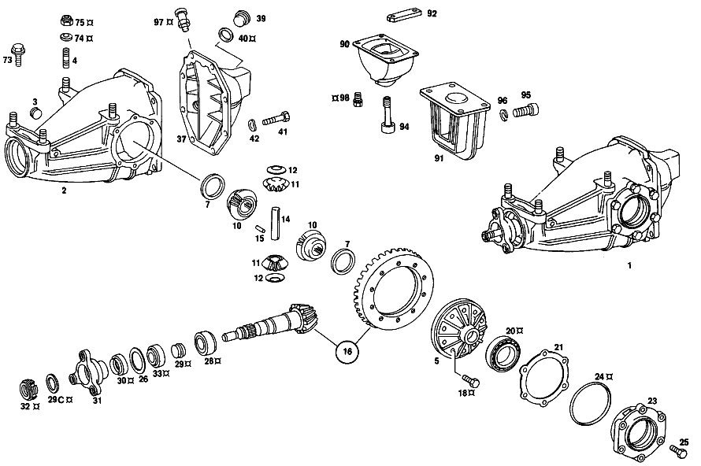

| № | Артикул | Название | Кол. | Примечание | Ограничение |
|---|---|---|---|---|---|
| 1 | A 115 350 04 20 | КАРТЕР МОСТА | - | ||
| 1 | A 114 350 02 20 | КАРТЕР МОСТА | - | ||
| 1 | A 123 350 41 20 | Картер моста | 1 | РЕДУКТОР ЗАДНЕГО МОСТА 1:3.92 [005] 017 033477, AUSSERDEM EINGEBAUT IN: 000,002,010 116194, EXCEPT FOR: 116379-116421 015 151859, EXCEPT FOR: 152185-152247 [006] 017 033477, AUSSERDEM EINGEBAUT IN: 100,102,103,110,112 310562, EXCEPT FOR: 311202-311331 115 159254, EXCEPT FOR: 159567-159632 005,017,105,107,108,117,119 000001 [050] +ЗАКАЗАТЬ:КОМПЕНС.ШАЙБЫ 123 357 01 52 ДО 123 357 15 52;СМ. ТАКЖЕ МИКРОФИШУ 222 [697] ДЕТАЛЬ ПОСТАВЛЯЕТСЯ ТОЛЬКО/ИЛИ ТАКЖЕ КАК ЗАП.ЧАСТЬ | |
| 1 | A 115 350 03 20 | - КАРТЕР МОСТА | - | ||
| 2 | A 115 350 14 20 | - КАРТЕР МОСТА | 1 | [402] БОЛЬШЕ НЕ ПОСТАВЛЯЕТСЯ | |
| 3 | A 186 997 00 32 | - ЗАГЛУШКА РЕЗЬБОВАЯ | 1 | M24X1,5 | |
| 4 | A 115 351 00 70 | - БОЛТ | - | ||
| 4 | A 115 351 02 70 | - Шпилька | 4 | [007] FROM CHASSIS: 000,002,010 027507 015 025015 100,102,103,110,112 060121 115 027700 005,017,105,107,108,117,119 000001 | |
| 5 | A 115 350 05 23 | - ДИФФЕРЕНЦИАЛ | - | ||
| 5 | A 115 350 10 23 | - Дифференциал | 1 | ||
| 7 | A 115 353 15 62 | - УПОРНАЯ ШАЙБА | 2 | ПО НЕОБХОДИМОСТИ 1.0 MM; 1.00 MM [402] БОЛЬШЕ НЕ ПОСТАВЛЯЕТСЯ | |
| 7 | A 115 353 12 62 | - Упорная шайба | 2 | ПО НЕОБХОДИМОСТИ 1.25 MM; 1.25 MM | |
| 7 | A 115 353 11 62 | - Упорная шайба | 2 | ПО НЕОБХОДИМОСТИ 1.30 MM; 1.30 MM | |
| 7 | A 115 353 16 62 | - Упорная шайба | 2 | ПО НЕОБХОДИМОСТИ 1.35 MM; 1.35 MM | |
| 7 | A 115 353 10 62 | - Упорная шайба | 2 | ПО НЕОБХОДИМОСТИ 1.40 MM; 1.40 MM | |
| 7 | A 115 353 17 62 | - Упорная шайба | 2 | ПО НЕОБХОДИМОСТИ 1.45 MM; 1.45 MM | |
| 7 | A 115 353 09 62 | - Упорная шайба | 2 | ПО НЕОБХОДИМОСТИ 1.50 MM; 1.50 MM | |
| 7 | A 115 353 18 62 | - Упорная шайба | 2 | ПО НЕОБХОДИМОСТИ 1.55 MM; 1.55 MM | |
| 7 | A 115 353 08 62 | - Упорная шайба | 2 | ПО НЕОБХОДИМОСТИ 1.60 MM; 1.60 MM | |
| 7 | A 115 353 19 62 | - Упорная шайба | 2 | ПО НЕОБХОДИМОСТИ 1.65 MM; 1.65 MM | |
| 10 | A 115 353 02 15 | - ШЕСТЕРНЯ ПОЛУОСИ | - | ||
| 10 | A 115 353 03 15 | - ШЕСТЕРНЯ ПОЛУОСИ | 2 | ||
| 11 | A 112 353 02 14 | - ВЕДУЩ.КОН.ШЕСТЕРНЯ | - | ||
| 11 | A 115 353 00 14 | - ВЕДУЩ.КОН.ШЕСТЕРНЯ | - | [401] ИСПОЛЬЗОВАТЬ СТАРЫЙ НОМЕР ДЕТАЛИ | |
| 11 | A 107 353 00 14 | - Сателлит дифференциала | 2 | ||
| 12 | A 112 353 00 24 | - Сферическая шайба | 2 | ||
| 12 | A 115 353 03 24 | - Упорное кольцо | 2 | ||
| 14 | A 115 353 04 21 | - БОЛТ | - | ||
| 14 | A 124 353 07 21 | - Палец | 1 | ||
| 15 | N 001481 006007 | - Распорный штифт | 1 | [402] БОЛЬШЕ НЕ ПОСТАВЛЯЕТСЯ | |
| 16 | A 115 350 00 39 | - РЯД ШЕСТЕРЕН | - | [002] FROM CHASSIS: 010 032699 015 030616 [026] UP TO CHASSIS: 010 UNTIL PRODUCTION STOP 015 222885 110 420819 115 228029 | |
| 16 | A 114 350 03 39 | - РЯД ШЕСТЕРЕН | - | ||
| 16 | A 123 350 08 39 | - Комплект колес | 1 | 1:3.92 [027] FROM CHASSIS: 015 222886 110 420820 115 228030 | |
| 18 | A 128 990 00 01 | - болт | 10 | ||
| 18 | A 115 990 43 01 | - БОЛТ | - | [401] ИСПОЛЬЗОВАТЬ СТАРЫЙ НОМЕР ДЕТАЛИ [405] ЗАМЕНЯТЬ ТОЛЬКО В КОМПЛЕКТЕ [045] UP TO CHASSIS: 015 311704 017 086044 110 466717 114 052029 115 349684 117 128337 000,002,005,010,100,102,103,105,107,108,112,119 UNTIL PRODUCTION STOP | |
| 18 | A 123 990 16 01 | - БОЛТ | - | [405] ЗАМЕНЯТЬ ТОЛЬКО В КОМПЛЕКТЕ | |
| 18 | A 123 990 30 01 | - БОЛТ | - | ||
| 18 | A 202 990 28 01 | - БОЛТ | 10 | ||
| 20 | A 000 980 82 02 | - Кон. роликоподшипник | 2 | ОПОРА ТАРЕЛЬЧ. ШЕСТЕРНИ | |
| 21 | A 115 353 04 54 | - РАСПОРНАЯ ШАЙБА | 2 | ПО НЕОБХОДИМОСТИ 0.80 MM | |
| 21 | A 115 353 00 54 | - Компенсационная шайба | 2 | ПО НЕОБХОДИМОСТИ 1.00 MM | |
| 21 | A 115 353 98 52 | - РАСПОРНАЯ ШАЙБА | 2 | ПО НЕОБХОДИМОСТИ 1.10 MM [402] БОЛЬШЕ НЕ ПОСТАВЛЯЕТСЯ | |
| 21 | A 115 353 96 52 | - Компенсационная шайба | 2 | ПО НЕОБХОДИМОСТИ 1.20 MM | |
| 21 | A 115 353 09 54 | - Компенсационная шайба | 2 | ПО НЕОБХОДИМОСТИ 1.30 MM | |
| 21 | A 115 353 11 54 | - Компенсационная шайба | 2 | ПО НЕОБХОДИМОСТИ 1.40 MM | |
| 21 | A 115 353 13 54 | - РАСПОРНАЯ ШАЙБА | 2 | ПО НЕОБХОДИМОСТИ 1.50 MM | |
| 21 | A 115 353 35 54 | - РАСПОРНАЯ ШАЙБА | 2 | ПО НЕОБХОДИМОСТИ 1.60 MM | |
| 21 | A 115 353 37 54 | - Компенсационная шайба | 2 | ПО НЕОБХОДИМОСТИ 1.70 MM | |
| 21 | A 115 353 39 54 | - РАСПОРНАЯ ШАЙБА | 2 | ПО НЕОБХОДИМОСТИ 1.80 MM | |
| 21 | A 115 353 41 54 | - Компенсационная шайба | 2 | ПО НЕОБХОДИМОСТИ 1.90 MM | |
| 23 | A 115 353 09 06 | - КРЫШКА | - | ||
| 23 | A 123 353 00 06 | - Крышка подшипника | 2 | ||
| 24 | A 005 997 34 45 | - УПЛОТНИТ. КОЛЬЦО | - | ||
| 24 | A 003 997 24 48 | - Уплотнительное кольцо | 2 | ||
| 25 | N 000933 008154 | - Винт | - | ||
| 25 | N 304017 008021 | - Винт с 6-гранной головкой | - | M8X20 | |
| 26 | A 112 353 14 52 | - Компенсационная шайба | 1 | ПО НЕОБХОДИМОСТИ 1.50 MM | |
| 26 | A 112 353 16 52 | - РАСПОРНАЯ ШАЙБА | 1 | ПО НЕОБХОДИМОСТИ 1.60 MM | |
| 26 | A 112 353 18 52 | - РАСПОРНАЯ ШАЙБА | 1 | ПО НЕОБХОДИМОСТИ 1.70 MM [402] БОЛЬШЕ НЕ ПОСТАВЛЯЕТСЯ | |
| 26 | A 112 353 20 52 | - Компенсационная шайба | 1 | ПО НЕОБХОДИМОСТИ 1.80 MM | |
| 28 | A 000 980 02 02 | - КОНИЧ. РОЛИКОПОДШИПНИК | - | ||
| 28 | A 000 980 00 02 | - КОНИЧ. РОЛИКОПОДШИПНИК | - | ||
| 28 | A 000 980 10 02 | - Конический подшипник | 1 | ПОДШИПНИК ПРИВОДНОЙ КОНИЧЕСКОЙ ШЕСТЕРНИ | |
| 29 | A 108 353 00 42 | - Распорная втулка | 1 | ||
| 29C | A 109 353 10 62 | - Фрикционная шайба | 2 | ||
| 30 | A 025 997 00 47 | - Уплотнительное кольцо | 1 | ПРИВОДН. КОНИЧ. ШЕСТЕРНЯ | |
| 31 | A 123 350 00 45 | - ФЛАНЕЦ | - | ||
| 31 | A 123 350 02 45 | - ФЛАНЕЦ | - | ||
| 31 | A 124 350 68 45 | - ФЛАНЕЦ | - | ||
| 31 | A 211 350 00 45 | - ФЛАНЕЦ | 1 | КАРДАННЫЙ ВАЛ | |
| 32 | A 115 990 09 60 | - ГАЙКА | - | ||
| 32 | A 123 353 00 72 | - гайка | 1 | M26X1.5 | |
| 32 | A 221 353 02 72 | - Гайка редукт. задн. моста | 1 | M26X1.5 [033] FROM CHASSIS: 005,017 016134 015 222886 105,107,108,117,119 031815 110 420820 115 228030 | |
| 33 | A 000 980 33 02 | - КОНИЧ. РОЛИКОПОДШИПНИК | - | ||
| 33 | A 002 980 11 02 | - Кон. роликоподшипник | 1 | ПОДШИПНИК ПРИВОДНОЙ КОНИЧЕСКОЙ ШЕСТЕРНИ | |
| 35 | A 003 997 12 47 | - УПЛОТНИТ. КОЛЬЦО | - | ||
| 35 | A 002 997 67 47 | - УПЛОТНИТ. КОЛЬЦО | - | ||
| 35 | A 009 997 22 47 | - УПЛОТНИТ. КОЛЬЦО | - | ||
| 35 | A 014 997 62 47 | - УПЛОТНИТ. КОЛЬЦО | - | ||
| 35 | A 020 997 25 47 | - Уплотнительное кольцо | 2 | ||
| 36 | A 115 994 04 34 | - Пруж. стопорное кольцо | 2 | ||
| 37 | A 115 351 32 08 | - Запорная крышка | 1 | [005] 017 033477, AUSSERDEM EINGEBAUT IN: 000,002,010 116194, EXCEPT FOR: 116379-116421 015 151859, EXCEPT FOR: 152185-152247 [006] 017 033477, AUSSERDEM EINGEBAUT IN: 100,102,103,110,112 310562, EXCEPT FOR: 311202-311331 115 159254, EXCEPT FOR: 159567-159632 005,017,105,107,108,117,119 000001 | |
| 39 | A 094 997 24 00 | - Резьбовая пробка | - | ||
| 39 | A 210 997 01 32 | - Резьбовая пробка | 1 | [012] FROM CHASSIS: 000,002,010 115920 015 151320 100,102,103,110,112 309555 115 158729 005,017,105,107,108,117,119 000001 | |
| 40 | N 007603 024105 | - Уплотнительное кольцо | 1 | [012] FROM CHASSIS: 000,002,010 115920 015 151320 100,102,103,110,112 309555 115 158729 005,017,105,107,108,117,119 000001 | |
| 41 | N 914038 010005 | - Винт с неспадающей шайбой | - | ||
| 41 | N 304017 010028 | - Винт с 6-гранной головкой | 8 | M10X20\-8.8 | |
| 42 | N 000137 010205 | - Пружинная шайба | 8 | ||
| 45 | A 123 586 09 35 | РЕМКОМПЛЕКТ | - | ||
| 45 | A 123 350 00 49 | Ремк-т шарикоподшипника | 1 | РЕДУКТОР ЗАДНЕГО МОСТА | |
| 50 | A 115 350 05 08 | БАЛКА МОСТА | - | [009] UP TO CHASSIS: 000,002,010 027506 015 025014 100,102,103,110,112 060120 115 027699 | |
| 50 | A 115 350 06 08 | БАЛКА МОСТА | - | ||
| 50 | A 115 350 08 08 | БАЛКА МОСТА | - | ||
| 50 | A 115 350 12 08 | Балка заднего моста | 1 | [007] FROM CHASSIS: 000,002,010 027507 015 025015 100,102,103,110,112 060121 115 027700 005,017,105,107,108,117,119 000001 | |
| 51 | A 115 987 03 40 | - Резиновый буфер | 1 | [010] UP TO CHASSIS: 000,002,010 045800 015 046706 100,102,103,110,112 109575 115 050509 | |
| 51 | A 094 987 13 00 | - Резиновый буфер | 1 | 17.5mm [013] FROM CHASSIS: 000,002,010 045801 015 046707 100,102,103,110,112, 109576 115 050510 005,017,105,107,108,117,119 000001 | |
| 52 | A 115 350 56 05 | РЫЧАГ | - | ||
| 52 | A 115 350 22 05 | РЫЧАГ | - | ||
| 52 | A 115 350 66 05 | РЫЧАГ | - | ||
| 52 | A 115 350 72 05 | РЫЧАГ | - | ||
| 52 | A 123 350 08 05 | РЫЧАГ | - | ||
| 52 | A 126 350 18 05 | РЫЧАГ | - | ||
| 52 | A 126 350 32 05 | Рычаг подвески | 1 | LEFT TRANSVERSE CONTROL ARM, с WHEEL BEARING AND COVER PLATE | |
| 53 | A 115 350 57 05 | РЫЧАГ | - | ||
| 53 | A 115 350 23 05 | РЫЧАГ | - | ||
| 53 | A 115 350 67 05 | РЫЧАГ | - | ||
| 53 | A 123 350 09 05 | РЫЧАГ | - | ||
| 53 | A 126 350 19 05 | РЫЧАГ | - | ||
| 53 | A 126 350 33 05 | Рычаг подвески | 1 | RIGHT TRANSVERSE CONTROL ARM, с WHEEL BEARING AND COVER PLATE | |
| 53 | A 115 350 42 05 | - РЫЧАГ | - | ||
| 53 | A 115 350 68 05 | - РЫЧАГ | - | ||
| 53 | A 115 350 73 05 | - РЫЧАГ | - | СЛЕВА [402] БОЛЬШЕ НЕ ПОСТАВЛЯЕТСЯ | |
| 53 | A 115 350 43 05 | - РЫЧАГ | - | ||
| 54 | A 115 352 32 65 | - САЙЛЕНТ-БЛОК | - | ||
| 54 | A 115 352 36 65 | - САЙЛЕНТ-БЛОК | - | ||
| 54 | A 123 352 05 65 | - САЙЛЕНТ-БЛОК | - | ||
| 54 | A 126 352 01 65 | - Резиновая опора | 4 | ДИАГОН. РЫЧАГ НА КРОНШТ. МОСТА | |
| 54 | A 123 352 07 65 | - Резиновая опора | 4 | РЕМОНТ. ИСПОЛНЕНИЕ С ЭКСЦЕНТР. ВНУТР. ВТУЛКОЙ | |
| 55 | A 115 997 06 81 | - втулка | 2 | 23 MM | |
| 56 | A 115 350 51 46 | - ФЛАНЕЦ | - | ||
| 56 | A 123 350 07 46 | - ФЛАНЕЦ | - | ||
| 56 | A 126 350 11 46 | - ФЛАНЕЦ | - | ||
| 56 | A 126 350 15 46 | - Комплект фланца | 1 | К\-Т ЛЕВЫХ ДЕТАЛЕЙ [014] FROM CHASSIS: 000,002,010 080962 015, 094113 100,102,103,110,112 207299 115 101340 005,017,105,107,108,117,119 000001 | |
| 57 | A 115 991 05 60 | - Цилиндрический шрифт | 2 | ||
| 58 | A 115 357 03 75 | - Диск | 2 | [022] UP TO CHASSIS: 015 214130 005,017 009041 105,107,108,117,119 015486 110 412899 115 216690 | |
| 59 | A 000 980 82 02 | - Кон. роликоподшипник | 2 | ||
| 60 | A 000 980 42 02 | - Шарикоподшипник | 2 | ||
| 63 | A 115 357 08 62 | - ШАЙБА УПОРНАЯ | - | ||
| 63 | A 115 357 12 62 | - Прижимная шайба | 2 | ||
| 64 | A 005 997 16 46 | - Уплотнительное кольцо | 2 | ||
| 65 | A 005 997 78 46 | - УПЛОТНИТ. КОЛЬЦО | - | ||
| 65 | A 010 997 18 46 | - УПЛОТНИТ. КОЛЬЦО | - | ||
| 65 | A 007 997 35 47 | - Уплотнительное кольцо | 2 | ||
| 66 | A 115 353 01 42 | - Проставочная втулка | 2 | ||
| 67 | A 115 357 00 26 | - Шлицевая гайка | 2 | ||
| 69 | A 115 586 11 35 | РЕМКОМПЛЕКТ | - | ||
| 69 | A 123 350 00 68 | Ремк-т полуоси зад. моста | 2 | ОПОРА ЗАДН. КОЛЕСА | |
| 70 | N 000960 016164 | Винт | - | M16X1.5X85\-8.8 | |
| 70 | N 000960 016250 | Винт | 4 | ||
| 71 | N 912004 016101 | Пружинное кольцо | 4 | ||
| 72 | N 000936 016012 | ГАЙКА | 4 | ||
| 73 | A 115 990 26 01 | БОЛТ | 4 | [009] UP TO CHASSIS: 000,002,010 027506 015 025014 100,102,103,110,112 060120 115 027699 | |
| 74 | A 115 352 05 76 | Диск | 4 | [007] FROM CHASSIS: 000,002,010 027507 015 025015 100,102,103,110,112 060121 115 027700 005,017,105,107,108,117,119 000001 | |
| 75 | A 094 990 79 10 | Гайка | 4 | [007] FROM CHASSIS: 000,002,010 027507 015 025015 100,102,103,110,112 060121 115 027700 005,017,105,107,108,117,119 000001 | |
| 80 | A 107 350 33 10 | ПОЛУОСЬ | - | ||
| 80 | A 107 350 43 10 | ПОЛУОСЬ | - | [051] WITH HOMOKINETIC JOINT | |
| 80 | A 123 350 04 10 | Полуось | 2 | [023] FROM CHASSIS: 015 214131 005,017 009042 105,107,108,117,119 015487 110 412900 115 216691 [052] WITH ANNULAR JOINT | |
| 81 | A 115 586 09 35 | РЕМКОМПЛЕКТ | - | ||
| 81 | A 115 350 11 37 | РЕМКОМПЛЕКТ | - | ||
| 81 | A 126 350 02 37 | Ремкомплект полуоси | 2 | AXLE SHAFT с HOMOKINETIC JOINT, OUTSIDE BOOT | |
| 81A | A 115 980 02 84 | - СОЕДИНИТЕЛЬНЫЙ ЭЛЕМЕНТ | - | ||
| 81A | A 124 997 27 90 | - СОЕДИНИТЕЛЬНЫЙ ЭЛЕМЕНТ | - | ||
| 81A | A 124 997 34 90 | - связующее вещество | 2 | ||
| 81C | A 115 980 03 84 | - СОЕДИНИТЕЛЬНЫЙ ЭЛЕМЕНТ | - | ||
| 81C | A 124 997 22 90 | - СОЕДИНИТЕЛЬНЫЙ ЭЛЕМЕНТ | - | ||
| 81C | A 124 997 30 90 | - связующее вещество | 2 | ||
| 84 | A 115 586 10 35 | РЕМКОМПЛЕКТ | - | ||
| 84 | A 115 350 12 37 | РЕМКОМПЛЕКТ | - | ||
| 84 | A 126 350 03 37 | Ремкомплект полуоси | 2 | AXLE SHAFT с HOMOKINETIC JOINT, INSIDE BOOT | |
| 84A | A 115 980 02 84 | - СОЕДИНИТЕЛЬНЫЙ ЭЛЕМЕНТ | - | ||
| 84A | A 124 997 27 90 | - СОЕДИНИТЕЛЬНЫЙ ЭЛЕМЕНТ | - | ||
| 84A | A 124 997 34 90 | - связующее вещество | 2 | ||
| 84C | A 115 980 03 84 | - СОЕДИНИТЕЛЬНЫЙ ЭЛЕМЕНТ | - | ||
| 84C | A 124 997 22 90 | - СОЕДИНИТЕЛЬНЫЙ ЭЛЕМЕНТ | - | ||
| 84C | A 124 997 30 90 | - связующее вещество | 2 | ||
| 84E | A 123 350 01 68 | Ремк-т полуоси зад. моста | 2 | САЛЬНИК ПОЛУОСИ | |
| 85 | A 115 357 54 52 | Диск | 2 | ПО НЕОБХОДИМОСТИ 3.40 MM | |
| 86 | N 000960 012337 | Винт | - | ||
| 86 | N 308765 012005 | Винт с 6-гранной головкой | 2 | ПОЛУОСЬ НА ФЛАНЦЕ ПОЛУОСИ ЗАДН. МОСТА M 12 1,5 X 100 [022] UP TO CHASSIS: 015 214130 005,017 009041 105,107,108,117,119 015486 110 412899 115 216690 | |
| 88 | A 115 357 03 53 | втулка | 2 | ПОЛУОСЬ НА ФЛАНЦЕ ПОЛУОСИ ЗАДН. МОСТА 72 MM [023] FROM CHASSIS: 015 214131 005,017 009042 105,107,108,117,119 015487 110 412900 115 216691 | |
| 89 | A 115 357 06 75 | Диск | 2 | ПОЛУОСЬ НА ФЛАНЦЕ ПОЛУОСИ ЗАДН. МОСТА [023] FROM CHASSIS: 015 214131 005,017 009042 105,107,108,117,119 015487 110 412900 115 216691 | |
| 90 | A 115 351 87 48 | Эластомерная опора | 1 | [003] UP TO CHASSIS: 000,002,010 116193, ALSO INSTALLED ON: 116379-116421 015 151858, ALSO INSTALLED ON: 152185-152247 [004] UP TO CHASSIS: 100,102,103,110,112, 310561, ALSO INSTALLED ON: 311202-311331 115 159253, ALSO INSTALLED ON: 159567-159632 | |
| 91 | A 123 351 11 42 | Резиновая опора | 1 | AXLE HOUSING TO FRAME FLOOR UNIT,REAR [017] 017 033477, AUSSERDEM EINGEBAUT IN: 000,002,010 116310, EXCEPT FOR: 116379-116421 015 152067, EXCEPT FOR: 152185-152247 100,102,103,110,112 310961, EXCEPT FOR: 311202-311331 115 159449, EXCEPT FOR: 159567-159632 [019] FROM CHASSIS 005,017,105,107,108,117,119 000001 | |
| 92 | A 115 351 05 40 | Язычок | 2 | САЙЛЕНТ\-БЛОК (РЕЗИНОВАЯ ОПОРА) НА НЕСУЩЕМ ОСНОВАНИИ КУЗОВА | |
| 94 | A 115 990 17 01 | БОЛТ | 1 | [003] UP TO CHASSIS: 000,002,010 116193, ALSO INSTALLED ON: 116379-116421 015 151858, ALSO INSTALLED ON: 152185-152247 [004] UP TO CHASSIS: 100,102,103,110,112, 310561, ALSO INSTALLED ON: 311202-311331 115 159253, ALSO INSTALLED ON: 159567-159632 [402] БОЛЬШЕ НЕ ПОСТАВЛЯЕТСЯ | |
| 95 | N 000961 014050 | Винт | - | ||
| 95 | N 308676 014020 | Винт с 6-гранной головкой | 2 | [005] 017 033477, AUSSERDEM EINGEBAUT IN: 000,002,010 116194, EXCEPT FOR: 116379-116421 015 151859, EXCEPT FOR: 152185-152247 [006] 017 033477, AUSSERDEM EINGEBAUT IN: 100,102,103,110,112 310562, EXCEPT FOR: 311202-311331 115 159254, EXCEPT FOR: 159567-159632 005,017,105,107,108,117,119 000001 | |
| 96 | N 912004 014100 | Пружинное кольцо | 2 | [005] 017 033477, AUSSERDEM EINGEBAUT IN: 000,002,010 116194, EXCEPT FOR: 116379-116421 015 151859, EXCEPT FOR: 152185-152247 [006] 017 033477, AUSSERDEM EINGEBAUT IN: 100,102,103,110,112 310562, EXCEPT FOR: 311202-311331 115 159254, EXCEPT FOR: 159567-159632 005,017,105,107,108,117,119 000001 | |
| 97 | A 115 350 02 90 | Воздушный клапан | 1 | ||
| 98 | N 914125 008300 | Винт | - | ||
| 98 | N 910106 008007 | Винт с 6-гранной головкой | 4 | M8X25\-8.8\-MK [017] 017 033477, AUSSERDEM EINGEBAUT IN: 000,002,010 116310, EXCEPT FOR: 116379-116421 015 152067, EXCEPT FOR: 152185-152247 100,102,103,110,112 310961, EXCEPT FOR: 311202-311331 115 159449, EXCEPT FOR: 159567-159632 [019] FROM CHASSIS 005,017,105,107,108,117,119 000001 | |
| 100 | A 116 586 01 35 | РЕМКОМПЛЕКТ | - | ||
| 100 | A 116 350 00 75 | Ремк-т балки зад. моста | 1 | КРЕПЛ. КРОНШТ.ЗАДН.МОСТА | |
| 101 | A 115 352 12 25 | Подшипник | 1 | FRAME FLOOR UNIT,FRONT LEFT | |
| 102 | A 115 352 00 69 | Стяжный болт | 2 | FRAME FLOOR UNIT,FRONT | |
| 103 | N 912004 016101 | Пружинное кольцо | 2 | ||
| 104 | N 914005 010000 | Винт с неспадающей шайбой | - | ||
| 104 | N 000933 010128 | Винт | 4 | ||
| A 115 353 14 62 | - УПОРНАЯ ШАЙБА | 2 | ПО НЕОБХОДИМОСТИ 1.1 MM; 1.10 MM [402] БОЛЬШЕ НЕ ПОСТАВЛЯЕТСЯ | ||
| A 115 353 13 62 | - УПОРНАЯ ШАЙБА | 2 | ПО НЕОБХОДИМОСТИ 1.2 MM; 1.20 MM [402] БОЛЬШЕ НЕ ПОСТАВЛЯЕТСЯ | ||
| A 115 353 07 62 | - ШАЙБА УПОРНАЯ | 2 | ПО НЕОБХОДИМОСТИ 1.70 MM; 1.70 MM [402] БОЛЬШЕ НЕ ПОСТАВЛЯЕТСЯ | ||
| A 115 353 08 54 | - РАСПОРНАЯ ШАЙБА | 2 | ПО НЕОБХОДИМОСТИ 0.60 MM [402] БОЛЬШЕ НЕ ПОСТАВЛЯЕТСЯ | ||
| A 115 353 06 54 | - РАСПОРНАЯ ШАЙБА | 2 | ПО НЕОБХОДИМОСТИ 0.70 MM [402] БОЛЬШЕ НЕ ПОСТАВЛЯЕТСЯ | ||
| A 115 353 02 54 | - РАСПОРНАЯ ШАЙБА | 2 | ПО НЕОБХОДИМОСТИ 0.90 [402] БОЛЬШЕ НЕ ПОСТАВЛЯЕТСЯ | ||
| A 115 350 24 45 | - ФЛАНЕЦ | - | |||
| A 115 353 05 26 | - ГАЙКА | - | |||
| A 115 353 11 26 | - гайка | 1 | [032] UP TO CHASSIS: 005,017 016133 015 222885 105,107,108,117,119 031814 110 420819 115 228029 | ||
| A 000 980 56 02 | - КОНИЧ. РОЛИКОПОДШИПНИК | - | |||
| A 001 981 68 05 | - КОНИЧ. РОЛИКОПОДШИПНИК | - | |||
| A 005 997 30 46 | - УПЛОТНИТ. КОЛЬЦО | - | |||
| A 005 997 29 46 | - УПЛОТНИТ. КОЛЬЦО | - | |||
| A 005 997 13 46 | - УПЛОТНИТ. КОЛЬЦО | - | |||
| A 115 994 03 34 | - СТОПОРН. КОЛЬЦО | - | |||
| A 115 351 12 08 | - КРЫШКА | - | [003] UP TO CHASSIS: 000,002,010 116193, ALSO INSTALLED ON: 116379-116421 015 151858, ALSO INSTALLED ON: 152185-152247 [004] UP TO CHASSIS: 100,102,103,110,112, 310561, ALSO INSTALLED ON: 311202-311331 115 159253, ALSO INSTALLED ON: 159567-159632 | ||
| A 115 350 16 02 | - КРЫШКА | - | |||
| A 115 350 24 02 | - КРЫШКА | - | |||
| A 186 997 00 32 | - ЗАГЛУШКА РЕЗЬБОВАЯ | - | M24X1,5 [011] UP TO CHASSIS: 000,002,010 115919 015 151319 100,102,103,110,112 309554 115 158728 | ||
| A 115 350 69 05 | - РЫЧАГ | - | СПРАВА [402] БОЛЬШЕ НЕ ПОСТАВЛЯЕТСЯ | ||
| A 115 340 30 46 | - SUPERSESSION DUMMY | - | |||
| A 115 350 06 46 | - ФЛАНЕЦ | - | |||
| A 115 350 15 46 | - ФЛАНЕЦ | - | |||
| A 115 350 34 46 | - ФЛАНЕЦ | - | [008] UP TO CHASSIS: 000,002,010 080961 015 094112 100,102,103,110,112 207298 115 101339 | ||
| A 115 350 31 46 | - ФЛАНЕЦ | - | |||
| A 115 350 07 46 | - ФЛАНЕЦ | - | |||
| A 115 350 16 46 | - ФЛАНЕЦ | - | |||
| A 115 350 35 46 | - ФЛАНЕЦ | - | [008] UP TO CHASSIS: 000,002,010 080961 015 094112 100,102,103,110,112 207298 115 101339 | ||
| A 115 350 52 46 | - ФЛАНЕЦ | - | |||
| A 123 350 08 46 | - ФЛАНЕЦ | - | |||
| A 126 350 12 46 | - ФЛАНЕЦ | - | |||
| A 126 350 16 46 | - Комплект фланца | 1 | К\-Т ПРАВЫХ ДЕТАЛЕЙ [014] FROM CHASSIS: 000,002,010 080962 015, 094113 100,102,103,110,112 207299 115 101340 005,017,105,107,108,117,119 000001 | ||
| A 000 980 37 02 | - КОНИЧ. РОЛИКОПОДШИПНИК | - | [008] UP TO CHASSIS: 000,002,010 080961 015 094112 100,102,103,110,112 207298 115 101339 [015] ИСПОЛЬЗОВАТЬ СТАРЫЙ НОМЕР ДЕТАЛИ | ||
| A 000 980 23 02 | - КОНИЧ. РОЛИКОПОДШИПНИК | - | [008] UP TO CHASSIS: 000,002,010 080961 015 094112 100,102,103,110,112 207298 115 101339 [015] ИСПОЛЬЗОВАТЬ СТАРЫЙ НОМЕР ДЕТАЛИ | ||
| A 000 980 21 02 | - КОНИЧ. РОЛИКОПОДШИПНИК | - | [008] UP TO CHASSIS: 000,002,010 080961 015 094112 100,102,103,110,112 207298 115 101339 [015] ИСПОЛЬЗОВАТЬ СТАРЫЙ НОМЕР ДЕТАЛИ | ||
| A 001 980 15 02 | - КОНИЧ. РОЛИКОПОДШИПНИК | - | |||
| A 001 980 16 02 | - КОНИЧ. РОЛИКОПОДШИПНИК | - | |||
| A 000 980 20 02 | - КОНИЧ. РОЛИКОПОДШИПНИК | - | |||
| A 000 980 42 02 | - Шарикоподшипник | 2 | |||
| A 000 980 38 02 | - КОНИЧ. РОЛИКОПОДШИПНИК | - | |||
| A 005 997 24 46 | - УПЛОТНИТ. КОЛЬЦО | - | |||
| A 005 997 23 46 | - УПЛОТНИТ. КОЛЬЦО | - | |||
| A 115 586 02 35 | РЕМКОМПЛЕКТ | - | ОПОРА ЗАДН. КОЛЕСА [402] БОЛЬШЕ НЕ ПОСТАВЛЯЕТСЯ | ||
| A 115 586 07 35 | РЕМКОМПЛЕКТ | - | |||
| A 115 586 06 35 | РЕМКОМПЛЕКТ | - | |||
| A 115 586 08 35 | РЕМКОМПЛЕКТ | - | |||
| A 115 352 04 76 | ШАЙБА | - | |||
| A 107 350 07 10 | ПОЛУОСЬ | - | |||
| A 115 350 42 10 | ПОЛУОСЬ | - | |||
| A 107 350 10 10 | ПОЛУОСЬ | - | [022] UP TO CHASSIS: 015 214130 005,017 009041 105,107,108,117,119 015486 110 412899 115 216690 [021] UNTIL PRODUCTION STOP 000,002,010,100,102,103,112 | ||
| A 107 350 27 10 | ПОЛУОСЬ | - | |||
| A 107 350 11 10 | ПОЛУОСЬ | - | [022] UP TO CHASSIS: 015 214130 005,017 009041 105,107,108,117,119 015486 110 412899 115 216690 [021] UNTIL PRODUCTION STOP 000,002,010,100,102,103,112 | ||
| A 107 350 28 10 | ПОЛУОСЬ | - | |||
| A 124 350 31 45 | ФЛАНЕЦ | - | |||
| A 124 350 56 45 | Фланец | 2 | ВНУТР. [052] WITH ANNULAR JOINT | ||
| A 124 357 01 75 | Подкладная шайба | 4 | ПОЛУОСЬ НА ФЛАНЦЕ ВНУТР. [052] WITH ANNULAR JOINT | ||
| A 000 990 92 12 | БОЛТ | - | |||
| A 001 990 71 12 | болт | 12 | ПОЛУОСЬ НА ФЛАНЦЕ ВНУТР.; M10X44.5 [052] WITH ANNULAR JOINT | ||
| A 115 586 04 35 | РЕМКОМПЛЕКТ | - | |||
| A 115 586 00 35 | РЕМКОМПЛЕКТ | - | |||
| A 115 586 05 35 | РЕМКОМПЛЕКТ | - | |||
| A 115 586 01 35 | РЕМКОМПЛЕКТ | - | |||
| A 201 350 05 37 | РЕМКОМПЛЕКТ | 2 | AXLE SHAFT с ANNULAR JOINT, INSIDE BOOT | ||
| A 115 357 56 52 | Диск | 2 | ПО НЕОБХОДИМОСТИ 3.3mm | ||
| A 115 357 58 52 | Диск | 2 | ПО НЕОБХОДИМОСТИ 3.2mm | ||
| A 115 357 60 52 | Диск | 2 | ПО НЕОБХОДИМОСТИ 3.10 MM | ||
| A 115 357 62 52 | РАСПОРНАЯ ШАЙБА | 2 | ПО НЕОБХОДИМОСТИ 3.00 MM [402] БОЛЬШЕ НЕ ПОСТАВЛЯЕТСЯ | ||
| A 115 357 64 52 | Диск | 2 | ПО НЕОБХОДИМОСТИ 2.90 MM | ||
| A 115 357 74 52 | РАСПОРНАЯ ШАЙБА | 2 | ПО НЕОБХОДИМОСТИ 2.70 MM [402] БОЛЬШЕ НЕ ПОСТАВЛЯЕТСЯ | ||
| A 115 357 75 52 | РАСПОРНАЯ ШАЙБА | 2 | 2.70 MM AS REQUIRED | ||
| A 115 357 76 52 | РАСПОРНАЯ ШАЙБА | 2 | ПО НЕОБХОДИМОСТИ 2.60 MM | ||
| A 115 351 25 42 | САЙЛЕНТ-БЛОК | - | [005] 017 033477, AUSSERDEM EINGEBAUT IN: 000,002,010 116194, EXCEPT FOR: 116379-116421 015 151859, EXCEPT FOR: 152185-152247 [006] 017 033477, AUSSERDEM EINGEBAUT IN: 100,102,103,110,112 310562, EXCEPT FOR: 311202-311331 115 159254, EXCEPT FOR: 159567-159632 005,017,105,107,108,117,119 000001 [016] UP TO CHASSIS: 000,002,010 116309 015 152066 100,102,103,110,112 310960 115 159448 | ||
| A 115 351 34 42 | САЙЛЕНТ-БЛОК | - | |||
| A 115 351 03 40 | ДЕРЖАТЕЛЬ | - | |||
| A 180 350 04 90 | КЛАПАН | - | [015] ИСПОЛЬЗОВАТЬ СТАРЫЙ НОМЕР ДЕТАЛИ [036] UP TO CHASSIS: 015 274020 017 053812 110 449932 114 020335 115 294560 117 092189 | ||
| N 914004 008001 | Винт с неспадающей шайбой | 4 | [016] UP TO CHASSIS: 000,002,010 116309 015 152066 100,102,103,110,112 310960 115 159448 | ||
| A 115 990 35 01 | БОЛТ | - | [015] ИСПОЛЬЗОВАТЬ СТАРЫЙ НОМЕР ДЕТАЛИ [024] UP TO CHASSIS: 115.015 214735 115.006,017 009642 115.105,107,108,117,119 016662 115.110 413513 115.115 217471 | ||
| A 115 351 81 48 | САЙЛЕНТ-БЛОК | - | |||
| A 115 352 03 46 | УПОР | - | |||
| A 115 586 03 35 | РЕМКОМПЛЕКТ | - | [015] ИСПОЛЬЗОВАТЬ СТАРЫЙ НОМЕР ДЕТАЛИ [020] UP TO CHASSIS: 000,002,010 127165 015 172237 100,102,103,110,112 347462 115 183998 | ||
| A 115 352 13 25 | Экран защитный | 1 | FRAME FLOOR UNIT,FRONT RIGHT |
Позиций: 269 · подписано на схемах: 188 · колесо — плавный зум в курсор, перетаскивание — пан, двойной клик — зум, клик по артикулу — скопировать · наведите на строку или цифру на схеме — подсветка связки, клик — закрепить.